An impromptu continuation of the last blog, where I use perceptual loss to get the updates to my random noise image that I wanted and finally manage to ‘generate’ an image of the digit eight.
computervision
fastai
parttwo
Author
Alex Strick van Linschoten
Published
March 18, 2023
My last blogpost was about my attempt to try to generate images of handwritten ‘eight’ digits from random noise. It was an exploration of some of the process at work in diffusion models and the whole diffusion paradigm in general.
It’s come up since then during our Sunday morning ‘Delft FastAI Study Group’ sessions and we’ve been throwing around a few different ideas on how to improve the process to actually output eights. Two in particular seemed like things we’d want to try out:
Perceptual Loss
Siamese Networks
I thought I’d try to implement a starter version of both of these in order to learn what they are, and in order to present for our group discussion. Before we get started, we can get some boilerplate setup out of the way (i.e. the status quo by the end of the last post).
1: Training an ‘8’ digit classifier (initial / naive approach)
from typing import Union, Callablefrom fastai.vision.allimport*import torchimport torch.nn.functional as Fimport torch.nn as nnfrom torchvision.models import vgg19import torchvision.models as modelsimport torchvision.transforms as transformsimport numpy as npimport matplotlib.pyplot as plt# make sure the digits are human-readabletorch.set_printoptions(precision=6, sci_mode=False)# dataset patched together from the original MNIST datasetpath = Path("./mnist_8_or_not/training")fnames = get_image_files(path)def label_func(x):return x.parent.namedls = ImageDataLoaders.from_path_func(path, fnames, label_func)# set environment based on hostnameimport osenvironment_type ="unknown"if"HOSTNAME"in os.environ: hostname = os.environ["HOSTNAME"] environment_type ="local"if hostname =="localhost"else"cloud"model_filename ="eight_classifier.pkl"model_base_path = Path("/home/") if environment_type =="cloud"else Path("./")# only train the model if we have no model alreadymodel_path = Path(f"{model_base_path}/{model_filename}")ifnot model_path.exists(): learn = vision_learner(dls, resnet34, metrics=error_rate) learn.fine_tune(6)# export our model so we don't have to retrain it every time from now on learn.export(f"{model_base_path}{model_filename}")else: learn = load_learner(f"{model_base_path}/{model_filename}")an_eight = Path(path /"8").ls()[0]not_an_eight = Path(path /"not_8").ls()[0]def get_eight_probability( image_pth: Union[Path, torch.Tensor], learner: Learner) -> torch.Tensor: _, _, probs = learner.predict(image_pth)return probs[0]
/Users/strickvl/.pyenv/versions/3.10.4/envs/mlops-blog/lib/python3.10/site-packages/tqdm/auto.py:21: TqdmWarning: IProgress not found. Please update jupyter and ipywidgets. See https://ipywidgets.readthedocs.io/en/stable/user_install.html
from .autonotebook import tqdm as notebook_tqdm
# we generate a 3x28x28 tensor with random values assigned# we ensure that we can use PyTorch's autograd on the valuesdef get_noisy_starter_tensor() -> torch.Tensor:return torch.randn(3, 28, 28, requires_grad=True)# this will allow us to display the tensor as an imagedef display_tensor(tns: torch.Tensor):# Convert the tensor to a NumPy array image_array = tns.detach().numpy()# Clip the pixel values between 0 and 1 image_array = np.clip(image_array, 0, 1)# Transpose the array to (28, 28, 3) shape image_array = image_array.transpose((1, 2, 0))# Display the image using Matplotlib plt.imshow(image_array) plt.show()
Using Perceptual Loss
I didn’t really have much of a sense of what perceptual loss was going into this, except that it was a loss function that was used in style transfer and that it was a way to measure the difference between two images.
Specifically, you have to define a ‘feature extractor’ that takes an image and returns a set of features. The loss is then the difference between the features of the generated image and the features of the target image. Implicit in this is that you are using some pre-trained model to extract the features. For our purposes, I started out my experiments with resnet18 but then switched over to vgg19 after reading a bit more
Perceptual loss, also known as content or feature loss, is a technique used to measure the similarity between two images at a higher, more perceptual level rather than pixel-by-pixel. It is particularly useful in tasks like style transfer, where the goal is to generate an image that combines the content of one image with the style of another.
The basic idea behind perceptual loss is to extract high-level features from both the generated and target images using a pre-trained deep learning model, often a convolutional neural network (CNN). The loss is then calculated as the difference between the extracted features, rather than the raw pixel values.
A feature extractor is a deep learning model that processes an image and outputs a set of features that capture meaningful information about the content of the image. These features can be thought of as a condensed representation of the image, which encodes its essential characteristics.
To compute perceptual loss, we start by passing both the generated and target images through a pre-trained CNN, such as ResNet-18 or VGG-19. These networks are trained on large-scale image classification tasks and are already capable of extracting high-level features that represent the content of the images.
Once the features are extracted, we compute the loss as the difference between the features of the generated image and the features of the target image. This difference can be calculated using various metrics, such as the mean squared error (MSE) or the L1-norm.
The main advantage of perceptual loss is that it is less sensitive to small, local changes in pixel values and focuses more on the overall content of the images. This makes it well-suited for tasks like style transfer, where the objective is to preserve the content of the input image while applying the style of another image. By using a pre-trained feature extractor like VGG-19 the loss function can leverage the knowledge learned from a vast amount of image data to better capture and compare the perceptual content of the images.
The code below includes my implementation of the perceptual loss function as well as an vgg__iterate_image function that I used to iterate over the image we’re generating.
def perceptual_loss(feature_extractor, generated_image, target_image): gen_features = feature_extractor(generated_image) target_features = feature_extractor(target_image) loss = nn.functional.l1_loss(gen_features, target_features)return lossdef vgg_iterate_image( image: torch.Tensor, target_image: torch.Tensor, iota: int, update_rate: float=0.1, update_printout: int=5, no_image: bool=False,):# Load the pre-trained VGG model vgg = vgg19(pretrained=True).features.eval()for param in vgg.parameters(): param.requires_grad =False# Choose a specific layer for the perceptual loss (e.g., 8th layer) feature_extractor = nn.Sequential(*list(vgg.children())[:9]) image.requires_grad_()# Calculate perceptual loss loss = perceptual_loss(feature_extractor, image[None], target_image[None]) loss.backward()if iota % update_printout ==0:print(f"iter {iota} / grad_sum: {image.grad.data.sum()}, loss: {loss}") image.data -= update_rate * image.grad.data image.grad.zero_()ifnot no_image and iota % update_printout ==0:# N.B. Use v1 to get a sense of what's changing, v2 for the current values# VERSION 1# plt.imshow(np.log1p(image[0].detach().numpy()))# plt.show(plt.gcf())# VERSION 2 display_tensor(image)
I also implemented a version for resnet but that didn’t work as well or converge as quickly as vgg19 so I’m just including the code for posterity here.
Code
def perceptual_loss(feature_extractor, generated_image, target_image): gen_features = feature_extractor(generated_image) target_features = feature_extractor(target_image) loss = nn.functional.l1_loss(gen_features, target_features)return lossdef resnet_iterate_image( image: torch.Tensor, target_image: torch.Tensor, iota: int, update_rate: float=0.1, update_printout: int=5, no_image: bool=False,):# Load the pre-trained ResNet model resnet = resnet18(pretrained=True) # Load the pre-trained ResNet-18 model resnet = nn.Sequential(*list(resnet.children())[:-1] ) # Remove the last fully connected layer resnet.eval() # Set the ResNet model to evaluation modefor param in resnet.parameters(): param.requires_grad =False# Choose a specific layer for the perceptual loss (e.g., layer before the last fully connected layer) feature_extractor = resnet image.requires_grad_() preds = torch.softmax(learn.model(image[None]), dim=1) targets = torch.Tensor([[1.0, 0]])# Calculate perceptual loss loss = perceptual_loss(feature_extractor, image[None], target_image[None]) loss.backward()if iota % update_printout ==0:print(f"iter {iota} / grad_sum: {image.grad.data.sum()}, loss: {loss}") image.data -= update_rate * image.grad.data image.grad.zero_()ifnot no_image and iota % update_printout ==0:# N.B. Use v1 to get a sense of what's changing, v2 for the current values# VERSION 1# plt.imshow(np.log1p(image[0].detach().numpy()))# plt.show(plt.gcf())# VERSION 2 display_tensor(image)
Here we get our target image (a random one of our ‘eight’ digits from the training set) and apply the same transforms to get it in the same size and format as our random noise image.
I reversed the values of the target image so that instead of being white squiggles on a black background, we now have black squiggles on a white background.
target_image_pil = Image.open(an_eight).convert('RGB')preprocess = transforms.Compose([ transforms.Resize((28, 28)), # Resize the image to match the input dimensions (3, 28, 28) transforms.ToTensor(), # Convert the image to a PyTorch tensor# Normalize the image with mean and std (use the same mean and std as your input image preprocessing) transforms.Normalize(mean=[0.485, 0.456, 0.406], std=[0.229, 0.224, 0.225])])# Apply preprocessingtarget_image = preprocess(target_image_pil)max_value = target_image.max()reversed_target_image = max_value - target_image
display_tensor(reversed_target_image)
For the iteration process, it’s fairly similar to what I did in the last post, only the number of iterations is still quite high. It prints out the image every 200 iterations so you can see it slowly converging and improving.
I had to experiment around quite a bit with the ‘update_rate’ (going from very low (i.e. 0.1) all the way up to 1000 at one point). I also decided to create the reversed_target_image at some point during this process because I suspected it might give better results. Here you can see the number 8 slowly emerging from the noise.
random_sample = get_noisy_starter_tensor()for i inrange(1200): vgg_iterate_image( random_sample, reversed_target_image, i, update_rate=8.0, update_printout=200, )
iter 0 / grad_sum: -0.11695463210344315, loss: 3.349287986755371
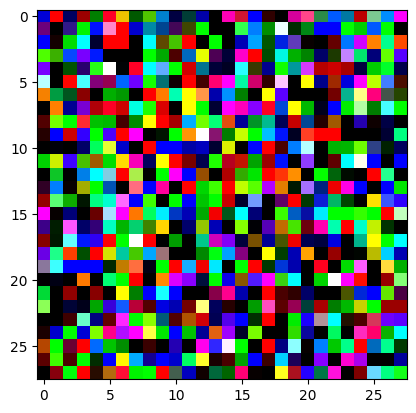
iter 200 / grad_sum: -0.05261861905455589, loss: 1.8285313844680786
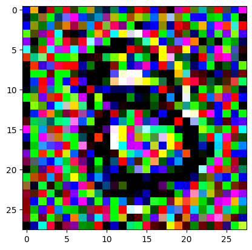
iter 400 / grad_sum: -0.05507233738899231, loss: 1.559353232383728
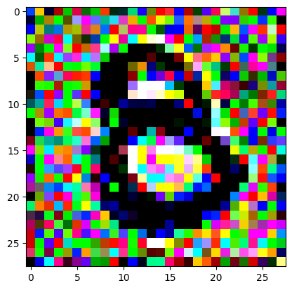
iter 600 / grad_sum: -0.08732452243566513, loss: 1.4069606065750122
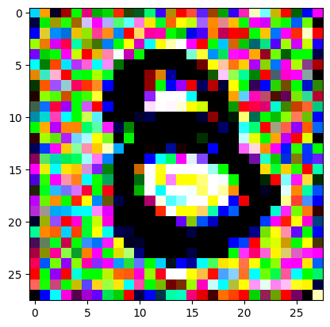
iter 800 / grad_sum: -0.11042110621929169, loss: 1.3145689964294434
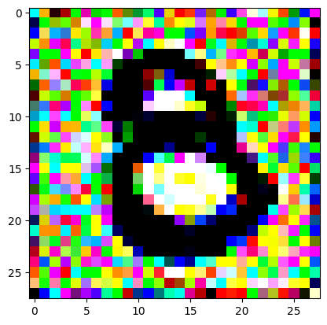
iter 1000 / grad_sum: -0.14137724041938782, loss: 1.2493029832839966
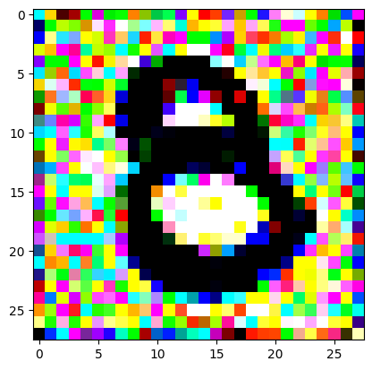
It took me a couple of hours to get to this point, and the inference and time to update each iteration was pretty slow. I suspect that it might be faster on a GPU, but I didn’t have one available to me at the time.
Next time, I’ll try to implement a Siamese network and see if that gives me better results. (First will have to figure out what exactly that is and how it works!)
random_sample = get_noisy_starter_tensor()for i inrange(12000): vgg_iterate_image( random_sample, reversed_target_image, i, update_rate=8.0, update_printout=200, )
/Users/strickvl/.pyenv/versions/3.10.4/envs/mlops-blog/lib/python3.10/site-packages/torchvision/models/_utils.py:223: UserWarning: Arguments other than a weight enum or `None` for 'weights' are deprecated since 0.13 and may be removed in the future. The current behavior is equivalent to passing `weights=VGG19_Weights.IMAGENET1K_V1`. You can also use `weights=VGG19_Weights.DEFAULT` to get the most up-to-date weights.
warnings.warn(msg)
iter 0 / grad_sum: -0.10067621618509293, loss: 3.2533576488494873
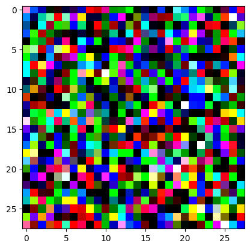
iter 200 / grad_sum: -0.05489164963364601, loss: 1.8312240839004517
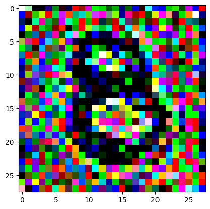
iter 400 / grad_sum: -0.054107874631881714, loss: 1.5468450784683228
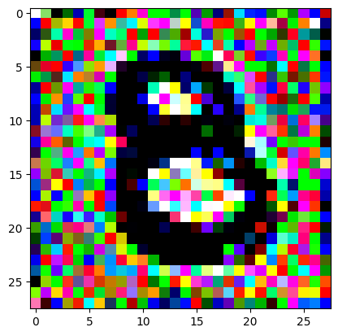
iter 600 / grad_sum: -0.07920947670936584, loss: 1.4032789468765259
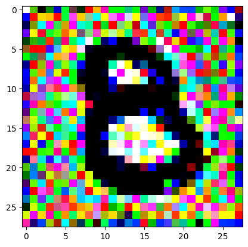
iter 800 / grad_sum: -0.11411219835281372, loss: 1.2947640419006348
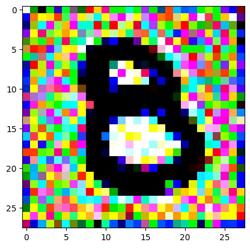
iter 1000 / grad_sum: -0.14544689655303955, loss: 1.2132982015609741
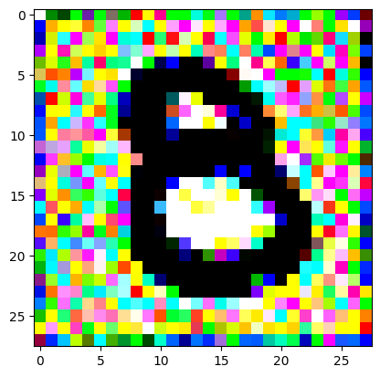
iter 1200 / grad_sum: -0.16940060257911682, loss: 1.1574007272720337
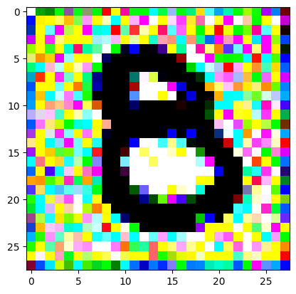
iter 1400 / grad_sum: -0.18719588220119476, loss: 1.108056664466858
iter 1600 / grad_sum: -0.2136225700378418, loss: 1.0530391931533813
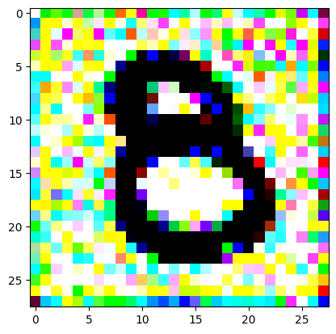
iter 1800 / grad_sum: -0.2254064530134201, loss: 0.9971842169761658
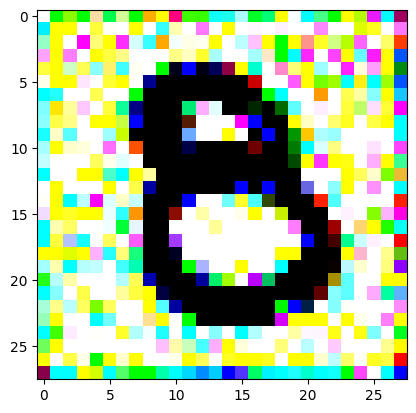
iter 2000 / grad_sum: -0.2527287006378174, loss: 0.9344728589057922
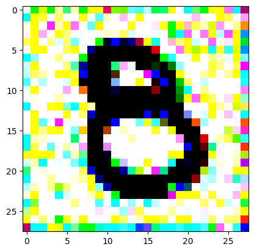
iter 2200 / grad_sum: -0.26381513476371765, loss: 0.8655626177787781
iter 2400 / grad_sum: -0.26774412393569946, loss: 0.7914406657218933
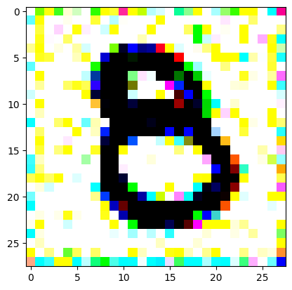
iter 2600 / grad_sum: -0.2612324655056, loss: 0.726896345615387
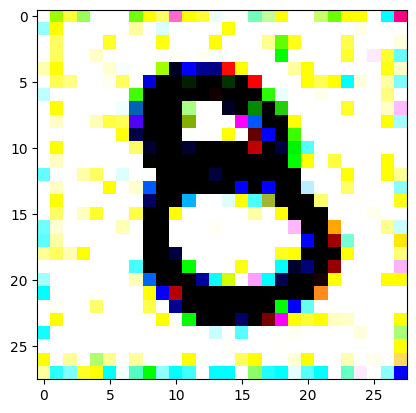
iter 2800 / grad_sum: -0.2553003430366516, loss: 0.6689462661743164
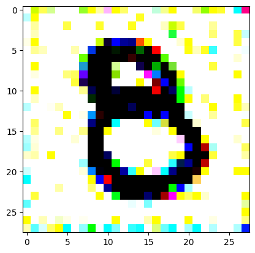
iter 3000 / grad_sum: -0.2531996965408325, loss: 0.6113003492355347
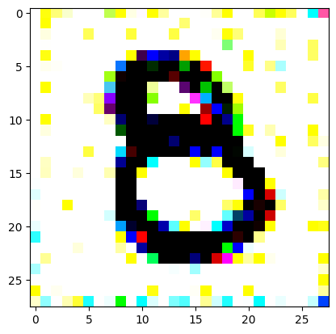
iter 3200 / grad_sum: -0.25401824712753296, loss: 0.5582084655761719
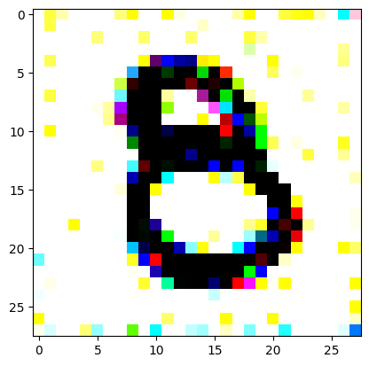
iter 3400 / grad_sum: -0.2472103387117386, loss: 0.5116526484489441
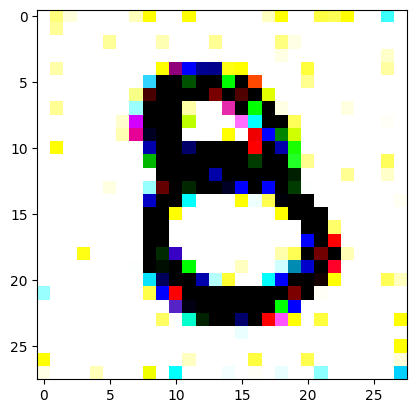
iter 3600 / grad_sum: -0.23793253302574158, loss: 0.4699331820011139
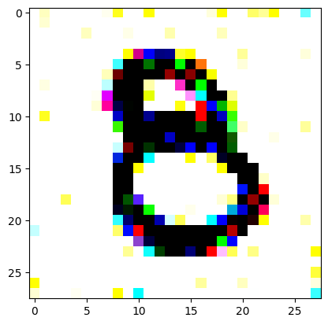
iter 3800 / grad_sum: -0.22248002886772156, loss: 0.4433839023113251
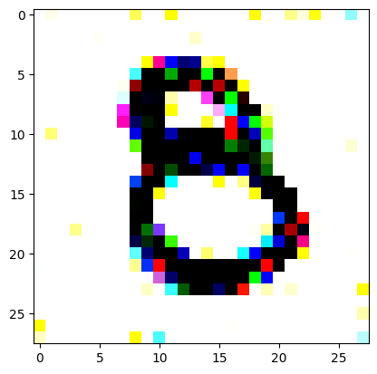
iter 4000 / grad_sum: -0.20998376607894897, loss: 0.3811723291873932
iter 4200 / grad_sum: -0.19712524116039276, loss: 0.37239381670951843
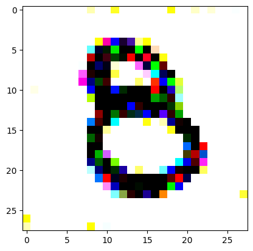
iter 4400 / grad_sum: -0.16977882385253906, loss: 0.34740307927131653
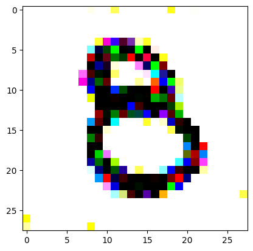
iter 4600 / grad_sum: -0.16369280219078064, loss: 0.3144417703151703
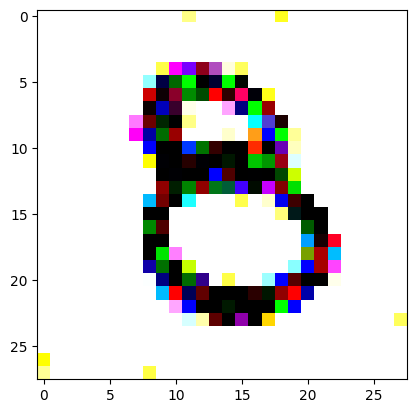
iter 4800 / grad_sum: -0.12760969996452332, loss: 0.32315561175346375
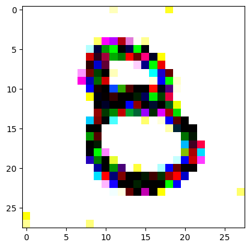
iter 5000 / grad_sum: -0.1290731281042099, loss: 0.2868266999721527
iter 5200 / grad_sum: -0.09261088073253632, loss: 0.26794564723968506
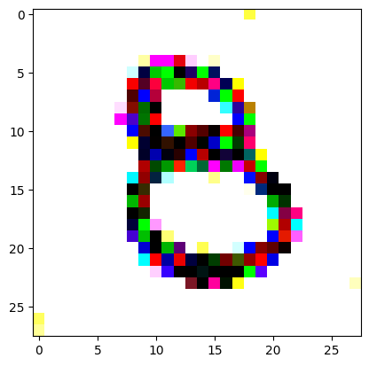
iter 5400 / grad_sum: -0.08580854535102844, loss: 0.26148849725723267
iter 5600 / grad_sum: -0.06559965014457703, loss: 0.26385462284088135
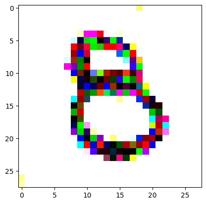
iter 5800 / grad_sum: -0.025712519884109497, loss: 0.273421049118042
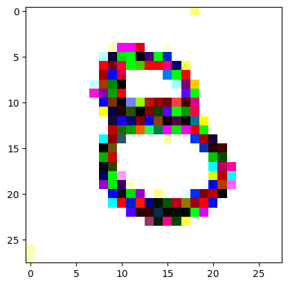
iter 6000 / grad_sum: -0.04072136431932449, loss: 0.22964514791965485
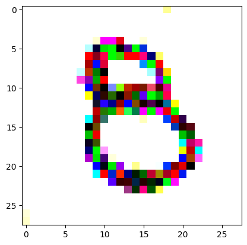
iter 6200 / grad_sum: -0.030087554827332497, loss: 0.25004929304122925
iter 6400 / grad_sum: -0.032913655042648315, loss: 0.25699320435523987
iter 6600 / grad_sum: -0.021285470575094223, loss: 0.23544834554195404
iter 6800 / grad_sum: -0.015309110283851624, loss: 0.22240281105041504
iter 7000 / grad_sum: -0.002907566726207733, loss: 0.256386399269104
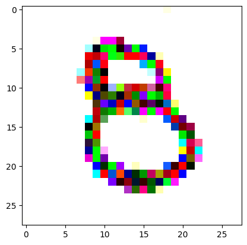
iter 7200 / grad_sum: -0.013432338833808899, loss: 0.24497221410274506
iter 7400 / grad_sum: 0.002584397792816162, loss: 0.24868912994861603
iter 7600 / grad_sum: -0.009248964488506317, loss: 0.2450336366891861
iter 7800 / grad_sum: -0.0018646717071533203, loss: 0.25336411595344543
iter 8000 / grad_sum: -0.013653086498379707, loss: 0.24088498950004578
iter 8200 / grad_sum: -0.01744297333061695, loss: 0.20649825036525726
iter 8400 / grad_sum: -0.00710982084274292, loss: 0.2272096574306488
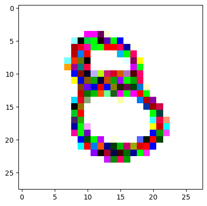
iter 8600 / grad_sum: 0.004392959177494049, loss: 0.22836482524871826
iter 8800 / grad_sum: -0.005208563059568405, loss: 0.2397071272134781
iter 9000 / grad_sum: -0.004147965461015701, loss: 0.23213578760623932
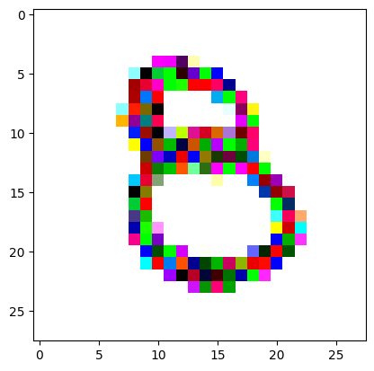
iter 9200 / grad_sum: -0.011317238211631775, loss: 0.23897279798984528
iter 9400 / grad_sum: 0.0013678669929504395, loss: 0.21524861454963684
iter 9600 / grad_sum: -0.0031454861164093018, loss: 0.24317485094070435
iter 9800 / grad_sum: 0.0048993900418281555, loss: 0.22074298560619354
iter 10000 / grad_sum: 0.000981885939836502, loss: 0.20930485427379608
iter 10200 / grad_sum: -0.010918810963630676, loss: 0.2221449315547943
iter 10400 / grad_sum: -0.009839233011007309, loss: 0.2183818370103836
iter 10600 / grad_sum: 0.007621109485626221, loss: 0.21323300898075104
iter 10800 / grad_sum: 0.004075892269611359, loss: 0.2392408847808838
iter 11000 / grad_sum: 0.0029926151037216187, loss: 0.22209693491458893
iter 11200 / grad_sum: -0.00012520700693130493, loss: 0.2071794718503952
iter 11400 / grad_sum: -0.008496522903442383, loss: 0.22705934941768646
iter 11600 / grad_sum: -0.0059080421924591064, loss: 0.1998962163925171
iter 11800 / grad_sum: 0.006994262337684631, loss: 0.20933829247951508